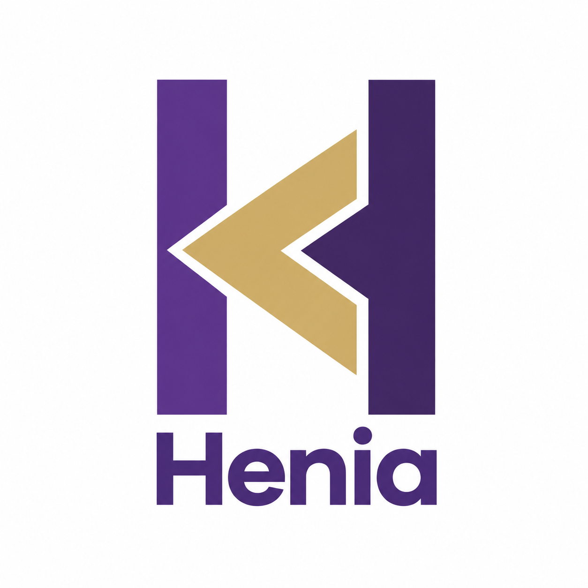
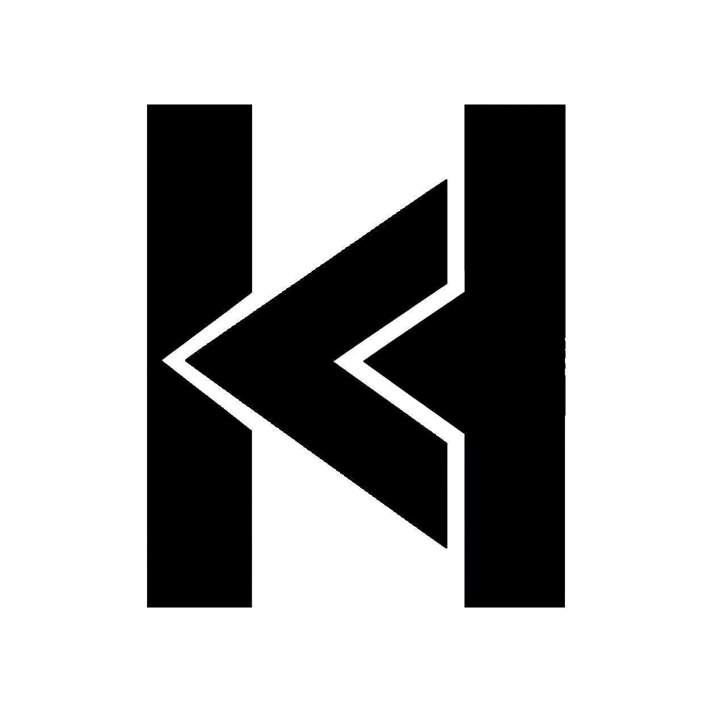
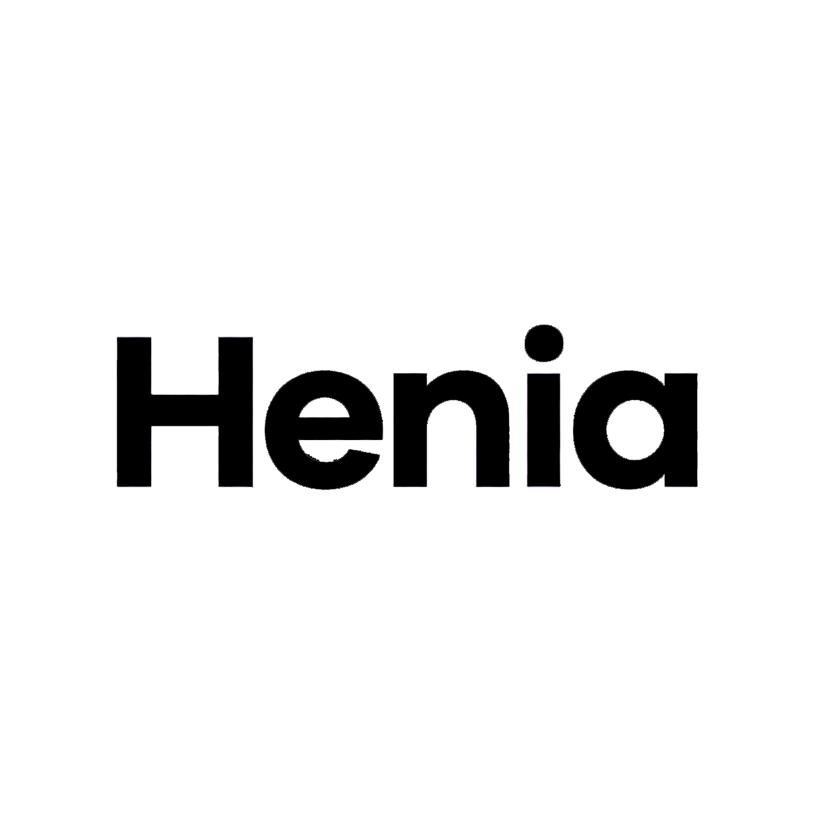

Manual de marca
Henia · Consultoría de IA
Guía de identidad visual y verbal para mantener una marca coherente, cercana y reconocible en cualquier soporte.
Guía de identidad visual y verbal para mantener una marca coherente, cercana y reconocible en cualquier soporte.
Henia es una consultoría que lleva la inteligencia artificial a los negocios locales. Traducimos una tecnología compleja en soluciones concretas, cercanas y sin tecnicismos.
Poner la IA al alcance del negocio de barrio: ahorrar tiempo, atender mejor a los clientes y decidir con datos, sin que haga falta saber de tecnología.
Cercana y humana, pero rigurosa. Somos el experto de confianza que explica las cosas claras y se ocupa de lo difícil. Ni fría ni "tecnológica de laboratorio".
Cercanía · Claridad · Confianza · Resultados · Modernidad con calidez.
El isotipo es una H con una flecha dorada: dirección, impulso y avance. Guiamos a cada negocio hacia adelante.
Nuestra marca se compone de tres piezas: el isotipo (símbolo), el logotipo (la palabra "Henia") y el lockup completo. Usa siempre los archivos oficiales, sin recrearlos.

Lockup principal
Negro / 1 tinta
NegroUn uso consistente del logo protege la marca. Respeta estas normas básicas en todos los soportes.
El morado aporta cercanía y modernidad; el dorado, calidez y valor; el carbón, solidez. El morado es el color principal y el dorado el acento.
#FFFFFF fondo · #F6F3FA lavanda suave (secciones) · #EFEAF6 morado suave · #5C5866 texto secundario.
Predomina el blanco/lavanda y el morado. El dorado se usa con moderación (≈10%) para que siga siendo especial. El carbón, para texto y bloques oscuros.
Una sola familia, Poppins (Google Fonts), en toda la marca. Geométrica, redondeada y moderna: transmite cercanía y claridad. Gratuita y web-safe.
Formas orgánicas (arcos y círculos), esquinas muy redondeadas e iconos de línea fina. Todo respira amplitud y calidez.
Siempre en forma de píldora (bordes 999px). Principal en morado; acento en dorado; secundario con borde.
Arcos y círculos como fondo/acentos. Aportan movimiento y suavidad detrás de fotos y datos.
Claros, cercanos y honestos. Hablamos de tú, con frases cortas, y evitamos la jerga técnica. Somos el experto que se explica bien.
✕ "Implementamos pipelines de IA generativa con modelos LLM optimizados."
✓ "Ponemos la IA a atender a tus clientes y a hacerte el trabajo repetitivo, sin que tengas que entender la tecnología."
Personas reales y negocios locales, en ambientes cálidos y luminosos. Con un sutil tinte violeta/dorado para armonizar con la marca.